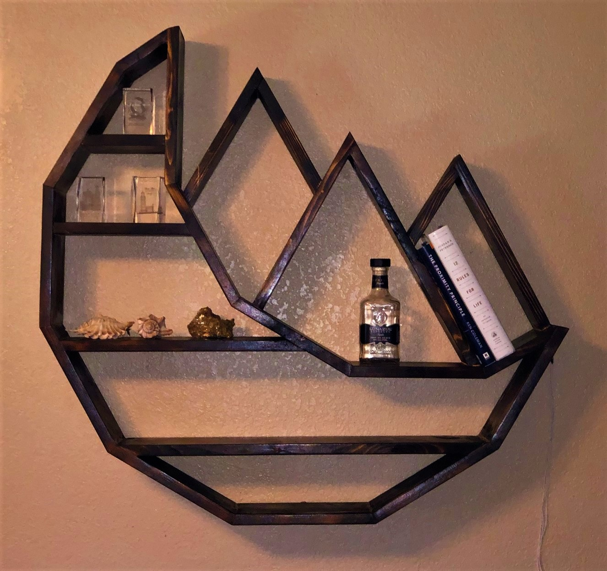
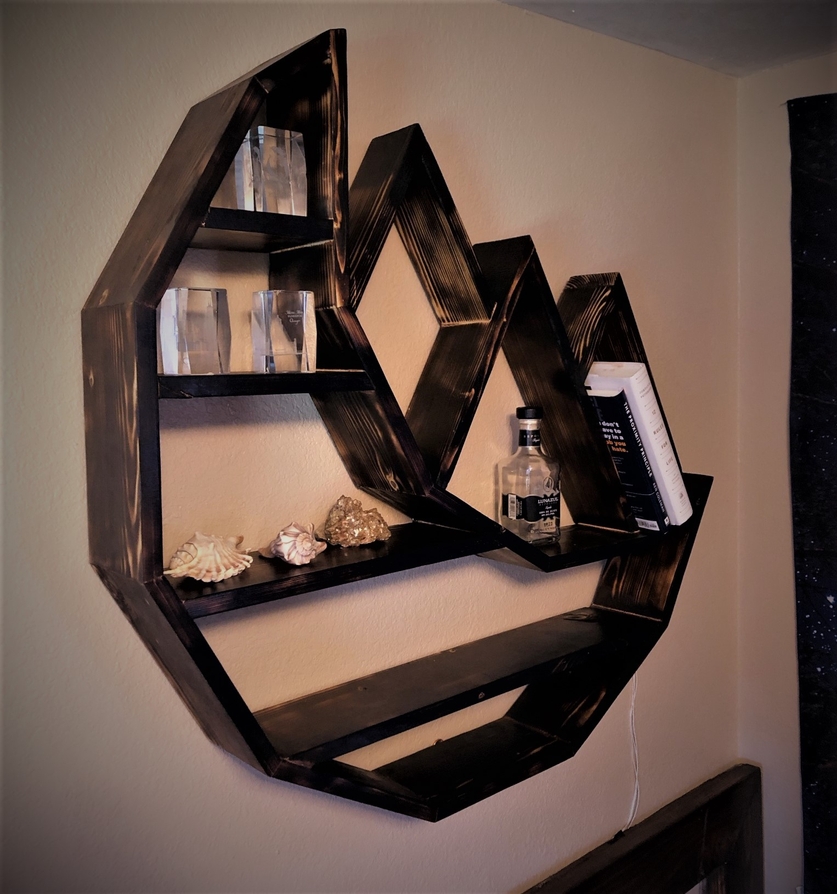
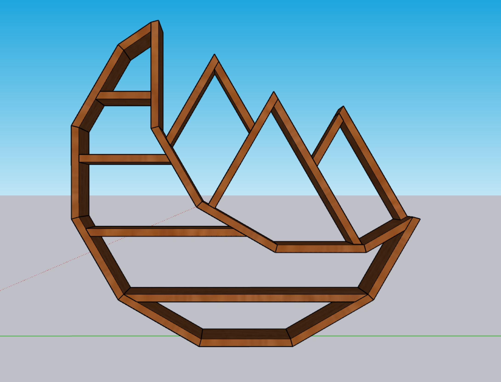
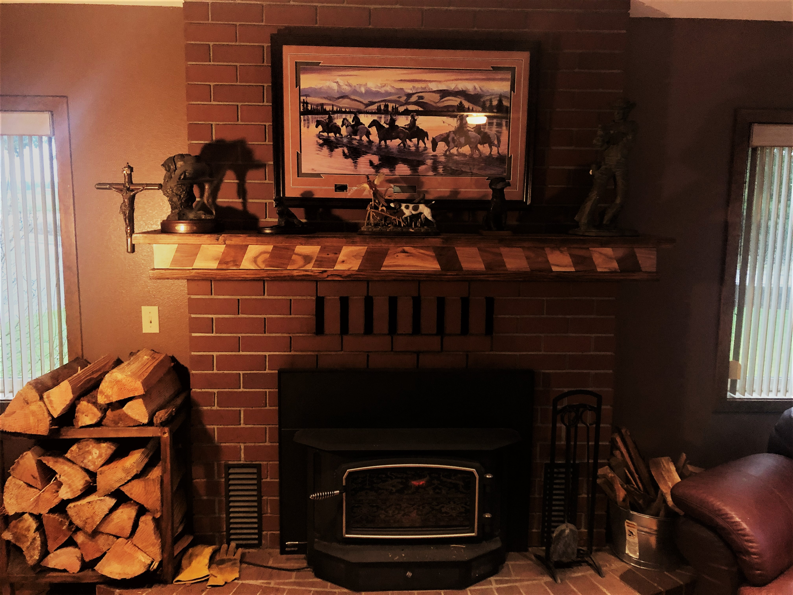
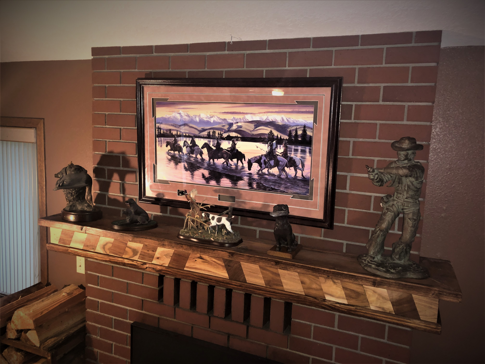
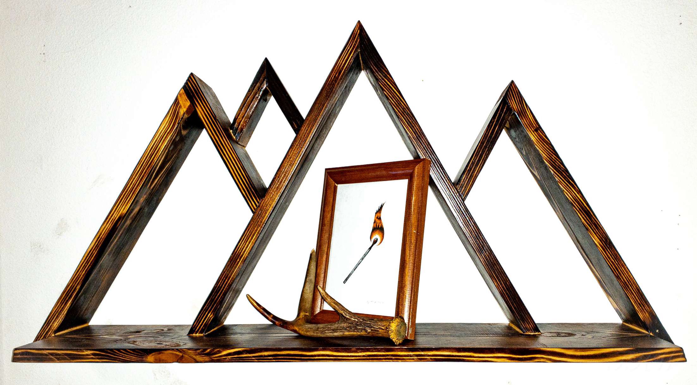
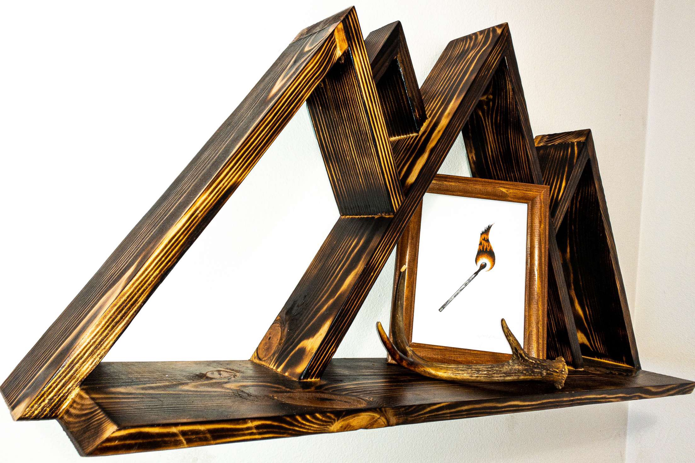

Crescent Moon Wall Art
  This Build was
my favorite yet to complete and likewise the most complicated.
After a refresher course in geometry, the design was simple. However, the assembly proved to me that a ninth of a degree or an eight of an inch discrepency in the cuts can lead to quite a headache.
Download the cutlist and SketchUp files
Inset Floating Mantel
 
Built to Fit
Covering up the existing, single brick deep "mantel" if you could even call it that, was a joy for sure
Unfortunately, this one came just too late to give the stockings proper time to hang on, but in the meantime the collection of bronze statues will suit it well.
The pine frame and pine top are accented with strips cut from hardwood flooring to form a chevron-esque pattern in the front, which adds a nice variety in color, and certainly pops in contrast to the brick fireplace.
Sho Sugi Bahn Mountain Shelf
 Built to Fit
Covering up the existing, single brick deep "mantel" if you could even call it that, was a joy for sure
Unfortunately, this one came just too late to give the stockings proper time to hang on, but in the meantime the collection of bronze statues will suit it well.
The pine frame and pine top are accented with strips cut from hardwood flooring to form a chevron-esque pattern in the front, which adds a nice variety in color, and certainly pops in contrast to the brick fireplace.